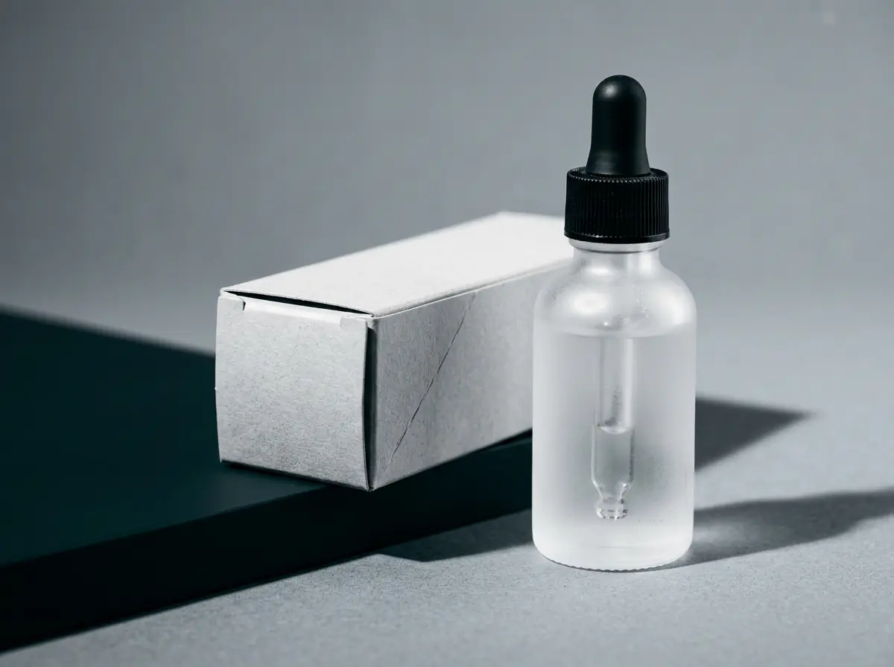
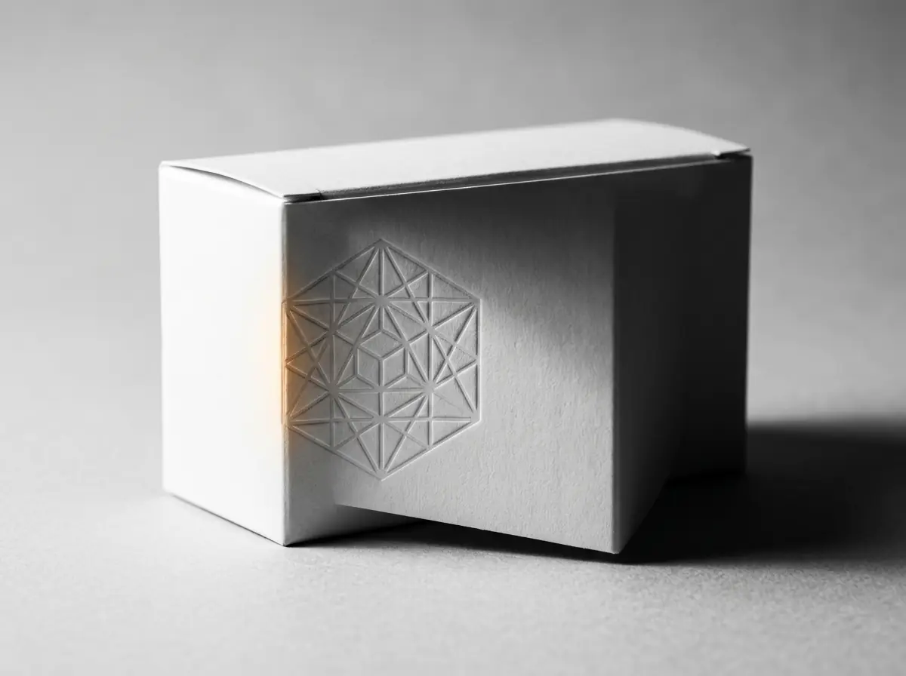

Built before the brand existed. No product, no name on a shelf, no audience — strategy and identity defined from day one, then a second brand born out of the first one working.
Precision in black and white. Then two linked circles.
Context
Les Laboratoires Pro-Icon wanted to enter dermo-cosmetics with nothing in hand: no product on a shelf, no name anyone had heard, no audience.
Two years later the same client came back to extend into a more science-led biological range — not because the category had changed, but because the first brand had worked.
Challenge
A new name has no track record to trade on, so the design has to carry the entire credibility argument by itself. Anything decorative reads as compensation.
The second brief was harder than the first. BioFormul had to read as related to Laformul — same house, same standards — without reading as a copy, a dilution or a downgrade.
Role
Brand builder from zero across both: strategy and identity direction, logo, pattern, typography, the colour system, the packaging architecture and the range applications.
Approach
Laformul answers the credibility problem with restraint: bold black type, generous white space, iridescent product textures. The restraint is the argument — a new name earns trust by looking certain.
BioFormul answers the lineage problem structurally rather than cosmetically. Two linked circles — science and care in continuous motion — sit on the same typeface and the same 60/30/10 discipline, so the pair read as siblings rather than as a brand and its imitator.
The gold is the ten. It is the smallest share of the system and the reason the science never turns cold.
Bold black type, generous white space, iridescent product textures across a serum, SPF and cream range. The restraint was the argument: a new name earns trust by looking certain.
Two linked circles — science and care in continuous motion. Launched two years later, once Laformul had proved there was room for a science-led extension.
Gilroy across both, so the pair read as siblings rather than as a brand and its imitator.
A disciplined 60/30/10 — grey, grey, gold. The gold is the tenth, which is what stops the science from turning cold.
SKU-level colour logic — gold, orange, multi-tone — so each formula tells its own story without leaving the system.



Laformul’s commercial success directly justified BioFormul’s launch — design work that grew the business that paid for it.
A short verified quote from Les Laboratoires Pro-Icon, tied specifically to this project, belongs here. Left empty until it is supplied and cleared.